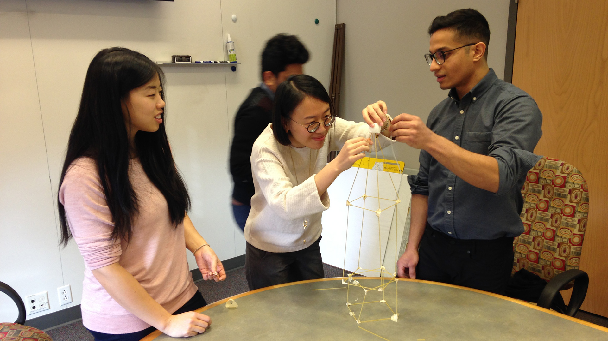

Kickoff Planning
How do we plan a Kick-off meeting around such a general topic? Can we design some co-design questions to help get as much out of the client as possible and narrow us down on to a specific path?
To get more background knowledge on both the state of cyber security and privacy online, as well as payments technology and Mastercard, we interviewed Jason Hong (HCII faculty expert in security and UX) and Lee Hillman (MHCI Executive Director and previous Mastercard VP of User Experience, Digital Payments) about their experience and research in their fields. The was immensely helpful to get us up to speed quickly, in addition to secondary research online and in-library.
After some wheel spinning, we closed in on a group card-sorting surrounding Target Users, Problems, and Opportunities. Initially we focused on various technology solutions for authentication, like biometrics, sensor-based, 2-factor, etc. We ended up feeling these were all solutions and tools, and we needed to get the clients to help us see their priorities for who they thought their users are and the respective challenges for each.
We also had a bit of fun, starting the meeting with a quick design challenge icebreaker, the Marshmallow Noodle Tower. We split into two teams and constructed noodle towers. The exercise shows the importance of quick iteration and prototyping. After the clock ran out, one team succeeded in building a 28.5” tower while the other fell over. We won’t say who won! :)
